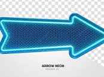

Na temporada 03 o Mindet continua a atacar, mesmo ele sendo expulso do corpo de Will ele decide
querer se materializar, ele priemiro entra na mente de ratos onde vai os reunindo e após isso
os seus corpos explodem e formam uma gosma de sangue e materiais internos, não se contentando, ele
entra na mente de pessoas para também controlá-las e também as reúne em um local, um balcão abandonado
especificamente, e acontece as mesmas coisas que aconteceu com os ratos, porém ele já começa a crescer
e ganhar forma, uma forma grande, monstruesa e grotesca.
O Minset após ter ganhado a sua forma mostruosa vai aterrorizar a cidade de Hawkings, bem no dia
da independecia dos EUA, em 4 de julho.
Também tem uma nova ameaça, os assassinos.

Pagina principal